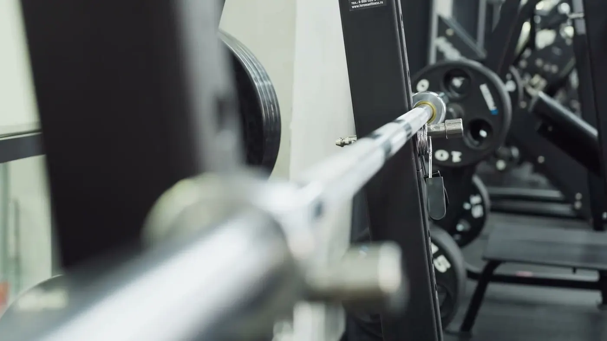
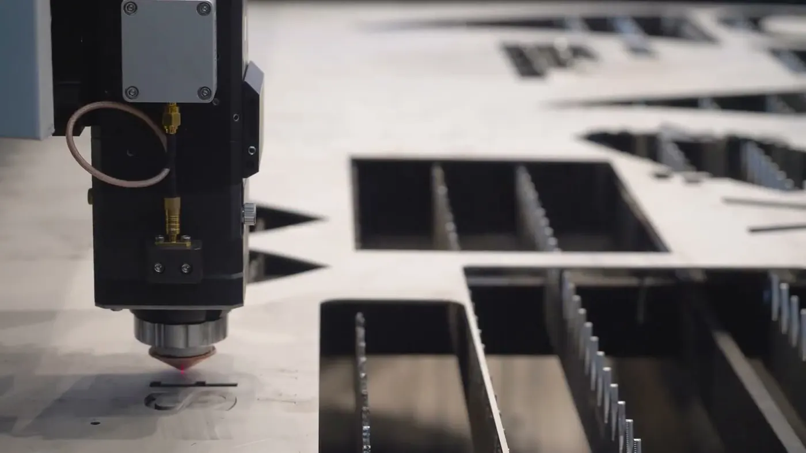
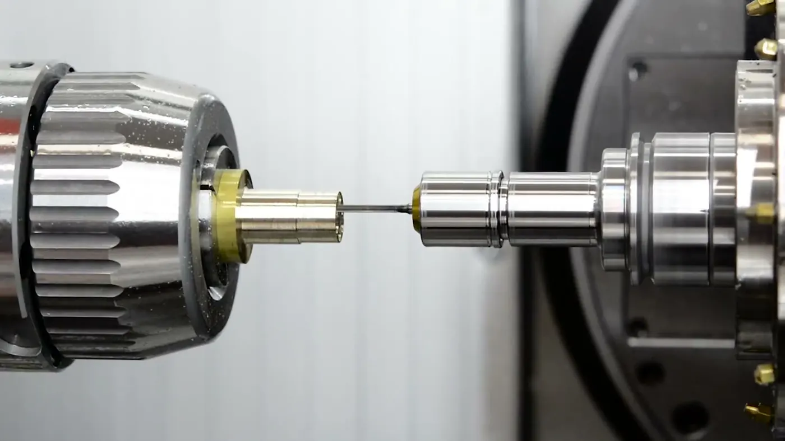
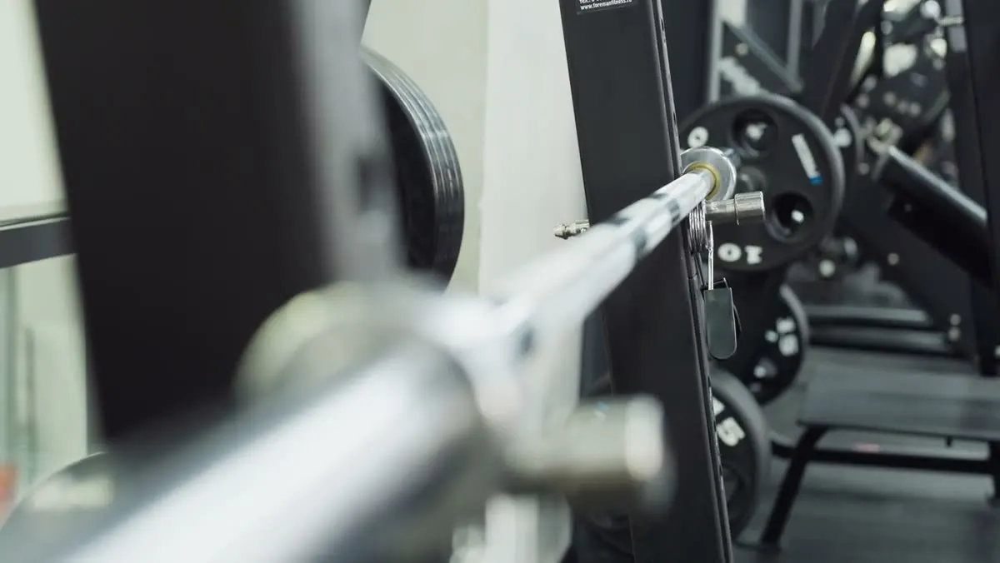
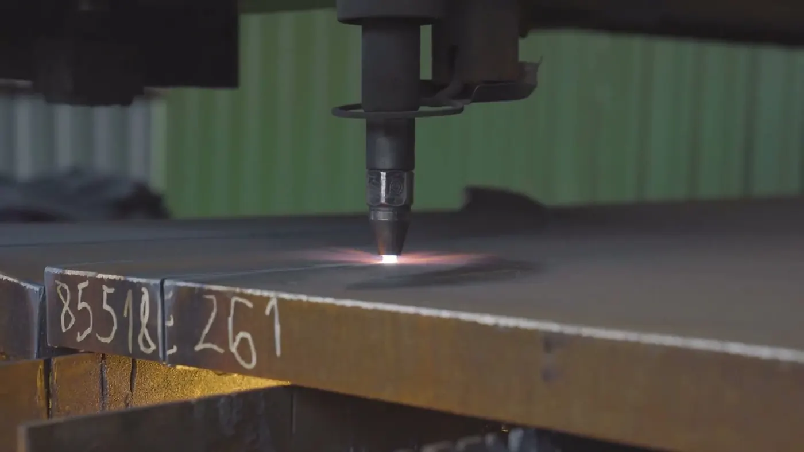

Blechteile nach Zeichnung — vom Zuschnitt bis zur Baugruppe.Zulieferer für den Maschinenbau · Peiting
Laserschneiden, Stanzen, Abkanten, WIG- und Laserschweißen, Oberfläche und Montage für Maschinen- und Anlagenbauer, die ein Teil brauchen, das passt.
Acht Verfahren, ein Ansprechpartner.
Vom Laserzuschnitt bis zur montierten Baugruppe — für Maschinen- und Anlagenbauer, die Blechteile nach Zeichnung brauchen.

Laserschneiden
Laserzuschnitte aus Stahl, Edelstahl und Aluminium — nach Ihrer Zeichnung.

Stanzen
Stanzteile und Lochbilder — wenn jedes Teil dem ersten gleichen muss.

Abkanten & Biegen
Aus der Fläche wird das Teil: Winkel, Profile, Halter und Gehäuse.

WIG- & Laserschweißen
WIG-Schweißen und Laserschweißen — saubere Nähte an Stahl, Edelstahl und Aluminium.

POS. 05Baugruppenmontage
Schweißen, montieren, verschrauben — Sie bekommen das einbaufertige Teil.

Lackieren & Galvanik
Lackieren und Galvanik — das Teil kommt in der Oberfläche, die auf der Zeichnung steht.

POS. 07Blechzuschnitt nach Maß
Formate und Streifen — zugeschnitten, wie Sie sie brauchen.

POS. 08CNC-Drehen & Fräsen
Dreh- und Frästeile über Partner — Sie bestellen alles bei uns.
Aus fünf Positionen wird ein Teil.
So läuft ein Auftrag bei uns: Zuschnitt, Kantteil, Naht, Oberfläche, Montage — die Zeichnung setzt sich zusammen, während Sie scrollen.
| Pos. | Bezeichnung | |
|---|---|---|
| 1 | LaserzuschnittGrundplatte aus Stahlblech, Lochbild im selben Durchgang | Mehr zu Laserzuschnitt |
| 2 | KantteilWinkel an der Abkantbank, Abwicklung gerechnet | Mehr zu Kantteil |
| 3 | SchweißnahtWIG-geschweißt, gerichtet, auf Wunsch verschliffen | Mehr zu Schweißnaht |
| 4 | OberflächeLackiert oder galvanisch beschichtet — nach Zeichnung | Mehr zu Oberfläche |
| 5 | MontageVerschraubt, nach Zeichnung geprüft, als Baugruppe geliefert | Mehr zu Montage |
Beispielbaugruppe zur Veranschaulichung. Gefertigt wird nach Ihrer Zeichnung — vom einzelnen Zuschnitt bis zur montierten Baugruppe.
Für Betriebe, die ein Teil nach Zeichnung brauchen.
- Maschinen- und AnlagenbauerZuschnitte, Kantteile und Schweißbaugruppen nach Zeichnung — einbaufertig, mit Oberfläche, in der Stückzahl des Auftrags.
- Industrie & SerienfertigerWiederkehrende Teile in gleicher Qualität, mit Kennzeichnung und Lieferschein, wie Ihre Fertigung sie braucht.
- Betriebe mit EinzelbedarfDas Blechteil, das die eigene Fertigung nicht abdeckt: ein Muster, ein Zuschnitt, ein Kantteil nach Zeichnung.

Drei Werkstoffe, aus denen der Maschinenbau baut.
Für Halter, Konsolen, Gehäuse und Konstruktionsteile — und alles, was danach lackiert oder beschichtet wird.
Für Teile, die korrosionsbeständig sein müssen, und für Sichtteile.
Leicht und gut zu kanten — für Gehäuse, Abdeckungen und Verkleidungen.
Werkstoff, Güte und Blechdicke nennen Sie mit der Anfrage — wir sagen, ob und wie wir das Teil fertigen.
Vier Stempel, dann ist es fertig.
Anfrage
Zeichnung als PDF, DXF oder STEP, dazu Werkstoff, Stückzahl und Wunschtermin. Eine Skizze mit Maßen reicht für den Anfang.
Angebot
Preis und Termin. Ist etwas an der Zeichnung so nicht fertigbar, sagen wir es jetzt — nicht erst in der Werkstatt.
Fertigung
Zuschnitt, Kanten, Schweißen und Montage in Peiting, Oberfläche nach Vorgabe. Sie sprechen mit den Leuten, die das Teil bauen.
Lieferung
Geprüft und verpackt — zur Abholung in Peiting oder geliefert nach Absprache.
Gezeichnet bei Ihnen. Geschnitten, gekantet, geschweißt und montiert in Peiting.
Was Einkäufer oft fragen
Ab welcher Stückzahl fertigen Sie?
Ab einem Teil. Ein Muster oder ein einzelner Zuschnitt ist bei uns kein Sonderfall — genauso wie die Serie.
In welchen Formaten kann ich anfragen?
DXF, DWG, STEP oder PDF. Eine bemaßte Skizze reicht für ein Angebot — wir zeichnen nach und stimmen ab.
Bekomme ich alles aus einer Hand?
Ja: Zuschnitt, Kanten, Schweißen, Oberfläche und Montage in einem Auftrag. Dreh- und Frästeile kommen von Partnerbetrieben — das sagen wir offen, die Verantwortung bleibt bei uns.
Wie schnell antworten Sie auf eine Anfrage?
Wir melden uns mit Preis und Termin. Wenn es eilt, rufen Sie an — dann sagen wir direkt, was möglich ist.

Schicken Sie uns die Zeichnung.
PDF, DXF oder STEP genügen für ein Angebot über alle acht Leistungen — wir sagen offen, wenn etwas nicht in unserer Werkstatt entsteht.
- Zeichnung schicken
- Angebot mit Termin
- Fertigung in Peiting
- Abholung oder Lieferung